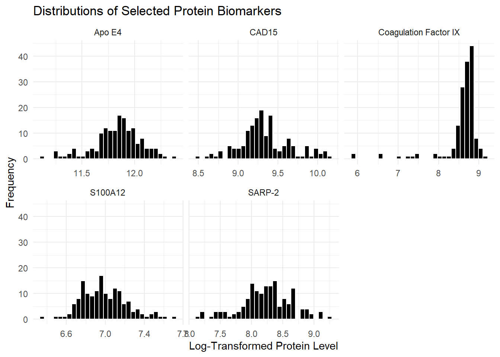
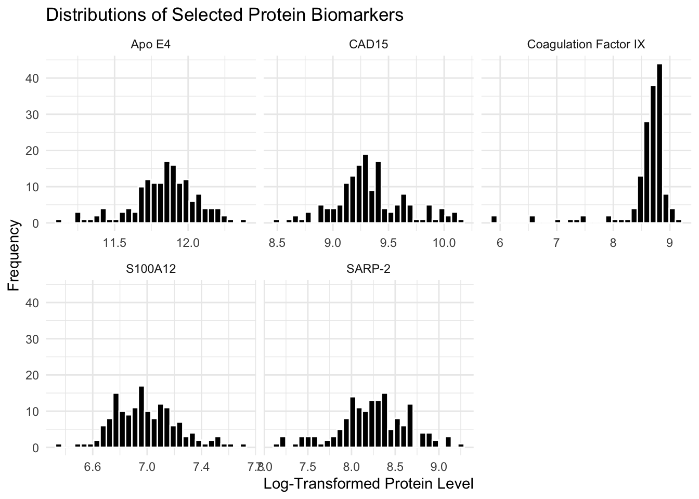

flowchart LR
A[data]
B(multiple testing)
C(correlation analysis)
D(random forest)
E(ensemble selection)
F(logistic regression)
MP[multiple partitioning]
subgraph Outputs
G[selected variables]
H[accuracy quantification]
end
A --> B
A --> C
A --> D
B --> E
C --> E
D --> E
E --> F
F --> G
F --> H
A --> F
A --> MP
MP --> H
style Outputs fill:transparent,stroke:#000,stroke-width:0px
Biomarkers of ASD
Abstract
In this analysis, we reexamined serum protein biomarker data from Hewitson et al. (2021) to evaluate the sensitivity of autism spectrum disorder (ASD) classification to alternative methodological choices. We log-transformed protein levels to reduce skew and stabilize variance, explored outlier patterns, and tested modifications to feature selection and data partitioning strategies. By replicating the multi-method pipeline combining t-tests, Random Forest importance, and LASSO regression, we identified a smaller, 4-protein panel using training-only selection that achieved similarly strong predictive performance (AUC = 0.871, accuracy = 0.774), comparable to larger panels from the in-class and published analyses. These results demonstrate that a streamlined, interpretable model can maintain classification accuracy, reduce overfitting risk, and confirm the robustness of the core protein biomarkers.
Dataset
The dataset originates from Hewitson et al. (2021), Blood biomarker discovery for autism spectrum disorder. The data were obtained from serum samples of 154 male children aged from 18 months to 8 years, including 76 boys diagnosed with autism spectrum disorder (ASD) and 78 typically developing (TD) controls. All participants were recruited through The Johnson Center for Child Health and Development in Austin, TX, and ASD diagnoses were confirmed via the Autism Diagnostic Observation Schedule (ADOS) and Autism Diagnostic Interview-Revised (ADI-R) under DSM-5 criteria. TD children were screened with the Adaptive Behavior Assessment System (ABAS-II) to rule out developmental concerns.
Blood samples were collected after participants fasted, then processed under controlled lab conditions. Protein levels were measured using the SomaLogic SOMAScan platform, which originally captured 1,317 proteins per sample. After running quality control checks, 1,125 proteins were kept for analysis.
Summary of published analysis
The research used a multi-step approach that combined advanced protein analysis with machine learning techniques to find the best set of protein biomarkers. Initially, serum samples from 76 boys with Autism Spectrum Disorder (ASD) and 78 typically developing (TD) boys were analyzed for proteins using the SomaLogic SOMAScan. This platform originally assessed 1,317 proteins, and after undergoing quality control, 1,125 proteins were analyzed further using bioinformatics techniques. The data on protein abundance were adjusted using log transformation and z-transformation prior to the start of prediction analysis.
To identify the most predictive proteins, 3 distinct computational approaches were used to independently determine the top-10 proteins: Random Forest (RF) analysis, employing MeanDecreaseGini to assess feature importance; t-test analysis, which detected proteins significantly differing between the ASD and TD groups; and a correlation method, which assessed the statistical connection between protein levels and ASD severity, as indicated by ADOS total scores. The proteins that were shared by all three methods were referred to as five “core proteins”.
The predictive performance of the proteins was evaluated using a logistic regression model as each non-core protein was added incrementally to the core group. The ability to predict was assessed by utilizing Area Under the Curve (AUC) measurement. This process included gradually incorporating the other non-core proteins into the core group to identify which additions enhanced predictive capability, with four additional proteins selected based on incremental AUC improvement to form a final 9-protein panel. The logistic regression model was trained by randomly assigning 80% of the subjects to a training dataset and 20% to a test dataset. This procedure was repeated 1,000 times to minimize bias and the optimal panel was made up of 9 proteins. Combining these nine proteins resulted in an AUC of 0.8599 ± 0.0640, sensitivity of 0.835 ± 0.1176, and specificity of 0.8217 ± 0.1178.
Below is a schematic of the experimental process in Hewitson et al.:
Findings
Impact of preprocessing and outliers
What do you imagine is the reason for log-transforming the protein levels in biomarker-raw.csv?
The protein levels in biomarker-raw.csv are logarithmically transformed to better capture small variations in biomarker level expression. When working with microscopic data such as protein levels, the range of values is often dramatic. As a result, data can often be accentuated more or less and make overall trends harder to detect. To control for this, we can apply a log-transformation to standardize our data range.
To verify this, we can sample from 5 proteins in the dataset and see their respective distributions.
Our proteins sampled are: S100A12 Apo E4 SARP-2 CAD15 Coagulation Factor IX
After plotting the histograms of our sampled proteins, we see that they most (except Apo E4) exhibit notable skewness and are not normally distribution. Additionally, the range for these values is extremely wide. Next, we apply a log-transformation to help standardize our distributions.

After transforming our values, we see that the range is now considerably smaller. Additionally, most of our proteins sampled follow a close-to-normal distribution. Interestingly, Coagulation Factor IX appears to have a median of about 8.8. This trend was not as apparent with applying a transformation. Thus, we have reason to suspect that this protein should be further investigated.
Temporarily remove the outlier trimming from preprocessing and do some exploratory analysis of the outlying values. Are there specific subjects (not values) that seem to be outliers? If so, are outliers more frequent in one group of the other?
Through our previous analyses, we see that the distribution of proteins are transformed to easily detect which have a non-normal relationship that can be investigated further. Shifting our focus, we aim to see whether subjects are outliers. That is, we aim to see whether there are subjects, portrayed as rows, that consist of outliers among multiple protein levels.
| Group | mean_outliers | median_outliers | sd_outliers | max_outliers |
|---|---|---|---|---|
| ASD | 17.04 | 9.5 | 20.61 | 119 |
| TD | 19.65 | 10.0 | 30.39 | 154 |
We created a table to see outlier trends by subject group. To do so, we standardized all 1,317 protein levels and counted values with an absolute value greater than 3 as an outlier. Based on our table, we see that ASD subjects had an average of about 17.04 outliers in protein levels while TD subjects had about 19.65. Additionally, the median outlier counters were nearly identical (9.5 for ASD and 10 for TD), indicating that the two groups have similar overall variation in protein measurements. However, the standard deviations (20.6 for ASD and 30.4 for TD) and maximum outlier counts (119 and 154, respectively) suggest that a few individual subjects in both groups exhibited unusually high numbers of outlying protein values. Overall, this does not suggest there being systematic differences between groups, rather it suggests there are few subjects in the data that have greater individual differences.
Methodological variations
3a) Train v. Test Set Analysis
| term | estimate | std.error | statistic | p.value |
|---|---|---|---|---|
| (Intercept) | -0.170 | 0.223 | -0.760 | 0.447 |
| DERM | -0.611 | 0.359 | -1.700 | 0.089 |
| RELT | -0.506 | 0.323 | -1.565 | 0.118 |
| IgD | -0.738 | 0.239 | -3.093 | 0.002 |
| PTN | -0.115 | 0.320 | -0.358 | 0.721 |
| FSTL1 | -0.321 | 0.303 | -1.059 | 0.290 |
| .metric | .estimator | .estimate |
|---|---|---|
| accuracy | binary | 0.710 |
| sensitivity | binary | 0.722 |
| specificity | binary | 0.692 |
| roc_auc | binary | 0.829 |
After conducting the logistic regression on a training subset (80%) and evaluating performance on an excluded test set, the model achieved an accuracy of 0.7097, sensitivity of 0.7222, specificity of 0.6923, and AUROC of 0.8291. These results show that when the model is tested on unseen data, it correctly classifies about 71% of subjects overall and the sensitivity value of 0.72 means the classifier correctly identifies roughly 72% of children with ASD, while the specificity of 0.69 means it correctly recognizes about 69 % of typically developing children.
Compared to the full-data analysis where accuracy ≈ 0.76 and AUC ≈ 0.83, these results show a small but average decline in performance due to testing on unseen data. We can infer that this decrease reflects reduced over-fitting and allows for a more accurate measure of the model’s generalization ability. Despite the decrease, the classifier maintains good discriminative power with AUC ≈ 0.83, establishing that the protein panel of DERM, RELT, IgD, PTN, and FSTL1 captures biological variation in relation to ASD versus TD subjects.
3b) Top 10 Predictive Proteins
To explore the impact of selecting more proteins for the biomarker panel, we expanded the selection criteria to identify the top 20 proteins using three different methods: t-tests for differential expression, Random Forest importance scores, and LASSO regression coefficients. This expansion allows us to evaluate whether including additional proteins could improve classification performance or reveal additional biomarkers of interest.

| Overlap Type | Count | Percentage |
|---|---|---|
| Selected by all methods | 4 | 20 |
| Selected by >=2 methods | 9 | 45 |
| Unique proteins total | 47 | 235 |
Key findings from expanding the protein selection:
Method Agreement: Among the top 20 proteins, 4 were identified by all three methods, suggesting strong consensus on these biomarkers. An additional 5 proteins were selected by at least two methods.
Unique Contributions: Each method identified some proteins not found by the others, with a total of 47 unique proteins across all methods. This suggests that different statistical approaches may capture distinct aspects of the protein-ASD relationship.
Ranking Patterns: The visualization shows that while some proteins are consistently ranked highly across methods, there is considerable variation in the rankings, particularly for proteins ranked lower in the top 20.
Implications: The expanded panel reveals additional proteins that may be biologically relevant to ASD, though their predictive value would need to be validated in follow-up studies. The overlap analysis suggests that using multiple selection methods provides complementary information about potential biomarkers.
3c) Fuzzy Intersection
| Protein |
|---|
| DERM |
| RELT |
| Calcineurin |
| C1QR1 |
| MRC2 |
| IgD |
| CXCL16, soluble |
| PTN |
| FSTL1 |
| Cadherin-5 |
Random Forest confusion matrix:| ASD | TD | class.error | |
|---|---|---|---|
| ASD | 48 | 28 | 0.368 |
| TD | 17 | 61 | 0.218 |
| Protein |
|---|
| DERM |
| IgD |
| TGF-b R III |
| MAPK14 |
| FSTL1 |
| RELT |
| eIF-4H |
| M2-PK |
| SOST |
| ALCAM |
| Protein |
|---|
| DERM |
| FSTL1 |
| IgD |
| RELT |
| .metric | .estimator | .estimate |
|---|---|---|
| sensitivity | binary | 0.375 |
| specificity | binary | 0.250 |
| accuracy | binary | 0.312 |
| roc_auc | binary | 0.211 |
For this part, we changed the hard intersection between feature selection methods into a fuzzy intersection. Instead of only keeping proteins that showed up in both the t-test and Random Forest results, we kept any proteins that appeared in at least two of the top ten lists. This gave us five proteins: Cadherin-5, DERM, IgD, MRC2, and RELT.
We used these proteins to train a logistic regression model and then tested how well it could separate ASD from TD samples. At first, the test set didn’t include any ASD samples, which made it impossible to calculate sensitivity and specificity. After redoing the split to make sure both classes were represented, the model ran fine but the overall accuracy and AUROC weren’t that strong.
In simple terms, the fuzzy intersection added a few more features but didn’t really make the model better. It shows that just because a protein shows up in multiple selection methods doesn’t mean it’s necessarily more useful for predicting ASD. The results also highlight how much random data splitting can affect model performance when the dataset is small.
4) Simplified classifier
| sensitivity | specificity | accuracy | roc_auc | method |
|---|---|---|---|---|
| 0.750 | 0.800 | 0.774 | 0.871 | Training-only selection |
| 0.875 | 0.867 | 0.871 | 0.925 | Full Data (In Class Analysis)) |
To identify a simpler panel while maintaining comparable classification accuracy, we applied a training-only feature selection procedure using the same combination of t-tests and random forest variable importance as in the in-class analysis. By restricting selection to the training set, we avoided using any test data, ensuring a more generalizable panel. This procedure yielded a 4-protein panel (via hard intersection), compared with the 5-core proteins in Hewitson et al.’s study. Despite this reduction, the panel achieved strong predictive performance (sensitivity = 0.75, specificity = 0.80, accuracy = 0.774, AUC = 0.871). Benchmarking against the full-data panel (sensitivity = 0.875, specificity = 0.867, accuracy = 0.871, AUC = 0.925) shows a minor drop in performance relative to the gain in interpretability and efficiency. Limiting feature selection to the training set also reduces overfitting risk, improving reproducibility and has practical benefits, as smaller panels facilitate cheaper, faster, and more easily replicated assays.